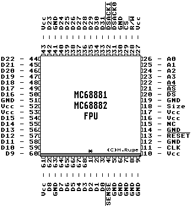

Previous
Next
TOC
Die Pinbelegung der 68881/68882 FPU im PLCC Gehäuse

Wer möchte, kann durchaus auch die FPU mit einem schnelleren Takt be-
treiben als die CPU, da das Interface zwischen den beiden ICs eh
asynchron ist und damit keine größeren Änderungen vorgenommen werden
müssen (ist von Motorola so dokumentiert worden)!
Wie das geht, erfahren Sie auf der
nächsten Seite.
Softwaremäßig kann man die 68881 von der 688882 problemlos unter-
scheiden. Man erzeugt mittels FSAVE einen Idle State Frame und prüft
ob das zweite Byte des Frames $18 (68881) oder $38 (68882) ist.
weiterblättern
Kapitel Die Pinbelegung der 68881/68882 FPU, Seite 1